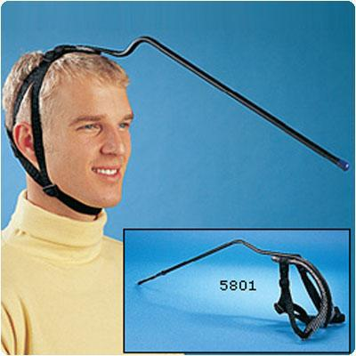
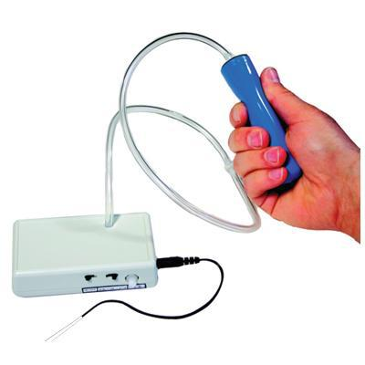
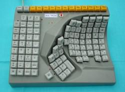
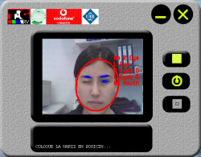

Dispositivos adaptados para la accesibilidad web
Son dispositivos especialmente adaptados para las personas con diversidades funcionales: ELA, esclerosis múltiple, tetraplejia, actus, parálisis cerebral, etc.
- APUNTADORES
Los apuntadores más comunes son los conocidos como licornios, que consisten en un casco que lleva una varilla metálica. Este tipo de dispositivo está indicado para personas que tienen un buen control del movimiento de la cabeza, de forma que con la cabeza pueden usar el teclado de un ordenador.
- CONMUTADORES
Son aparatos apropiados para usuarios con movilidad reducida, que permiten al usuario activar unos interruptores mediante botones o soplidos con la boca.
- TECLADOS
Son teclados especiales con distintos materiales, normalmente materiales más duros y con la colocación de las teclas repartida de forma que el usuario pueda acceder fácilmente a todas las teclas y que puedan pulsarlas simultáneamente.
- WEBCAMS
Son videocámaras que permiten mediante gestos o movimientos realizar distintas acciones. También son capaces de traducir los movimientos de la cabeza o los ojos en movimientos del puntero del ratón de un ordenador y de sustituir el uso del ratón por comandos de voz mediante un micrófono.